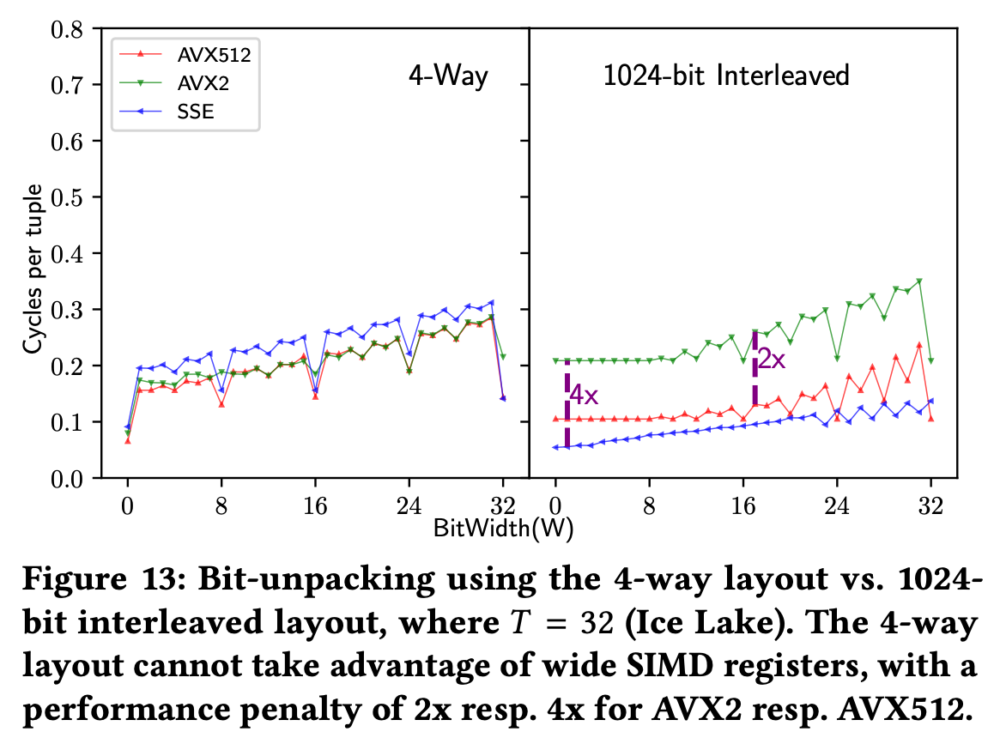
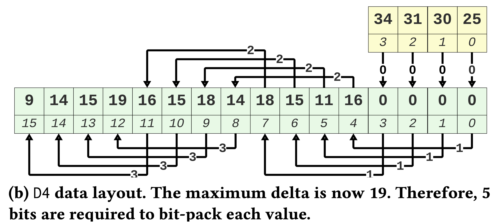
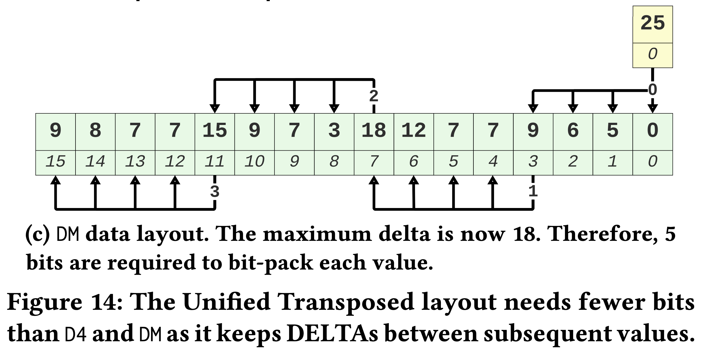
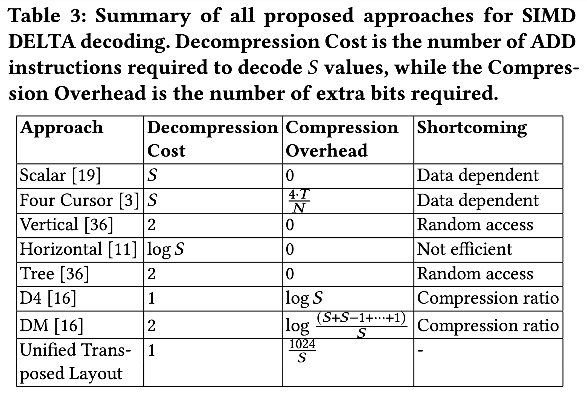
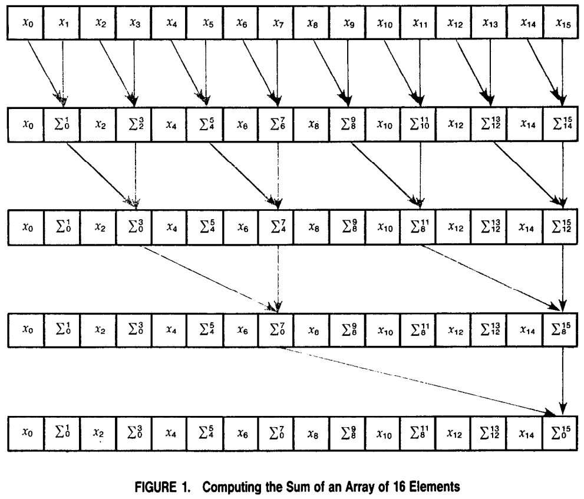
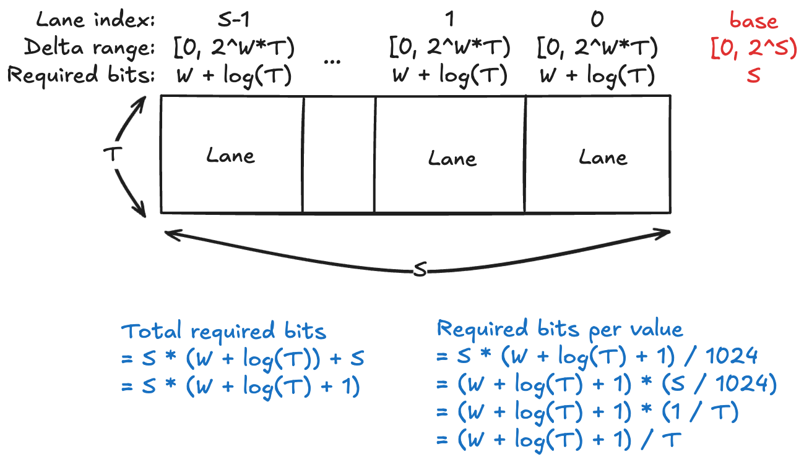
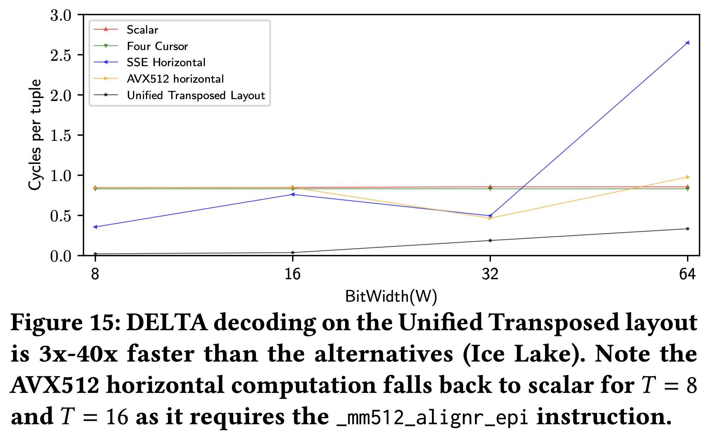
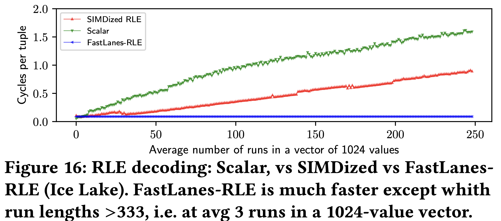

별도의 명시가 없는 한, 본 글의 모든 그림은 위 논문에서 가져왔습니다.
목차
4. Related Work
- 지난 20년 가까이 SIMD 를 이용해 compression, decompression 속도를 늘려 DBMS 의 성능을 향상시키려는 노력들이 수행되었다.
- 이 section 에서는 그런 노력들이 어떤 것이 있는지, 그리고 그것들에 비해 FastLanes 가 얼마나 좋은지 알아보자.
4.1. Bit-packing
- 일단 전통적인 BP 의 변천사는 다음처럼 정리해 볼 수 있다.
- PA봉크 본인의 옛날 논문 에서는 patching 을 이용해 일정한 bit-width 로 BP 하는 방법을 제시했고
- 이 논문(29) 에서는 그것을 Horizontal 이라고 불렀으며
- 이 논문(35) 에서는 그것을 SIMD-friendly 하게 바꾸었다.
- 근데 이 논문(29) 에서는 추가적으로 k-way 라는 방법을 새로 제시하였는데,
- 이건 BP 된 value 들을 -bit 씩 잘라 연속된 memory 공간에 배치하는 방법이다.
- 이 방식은 k-way 말고도 Vertical layout 혹은 Interleaving (!!) 이라고도 불린다.
- FastLanes 에서는 이 아이디어를 SIMD 에 적용하고 이름을 빌려와 Interleaving BP 를 제안하고 있는 것.
- 물론 이와 유사한 것이 이전에도 나오긴 했다.
- BtrBlocks 에서도 언급한 Lemire 아자씨의 SIMD-FastBP128 은 SSE SIMD 에 4-way vertical layout 을 적용하였고,
- 그 이후 AVX2, AVX512 가 등장하며 8, 16-way 도 등장했다.
- 하지만 이들과 FastLanes 에서의 Interleaving BP 와의 차이점은 이전 애들은 특정 SIMD reg 크기에 한정되어있는 방법이라는 것이다.
- 따라서 당연히 다른 BP bit-width 를 가지고 있거나 다른 reg 크기를 가지고 있는 시스템에는 적용하지 못하는 방법이라는 것이 주된 차이점이다.

- 위 그림은 4-way vertical layout 과 interleaved BP 의 차이를 보여주고 있는 것이다.
- 일단 4-way 의 경우에는 SSE, AVX2, AVX512 에 대해 register size 가 2배씩 커짐에도 불구하고 성능 차이가 그리 크지 않은 것을 볼 수 있는데
- Interleaved BP 의 경우에는 , 씩 커지고 있는것을 볼 수 있다… 라고 하는데
- 근데 그림을 잘못그린건지 그래프가 좀 이상하다.
- 일단 그림을 그대로 해석하면 (세로축은 작을수록 좋기 때문에) SSE 가 제일 좋고, AVX2 는 SSE 보다 4배 안좋으며 AVX512 는 AVX2 보다 2배 좋은 것으로 보인다.
- 즉, SSE > (2배) AVX512 > (2배) AVX2 이렇게 성능 차이가 있는 것으로 보이는데
- 근데 본문에는 AVX512 > (2배) AVX2 > (2배) SSE 로 설명하고 있다.
- 추가적으로, BP 에 관한 선행 연구들에는 decompression speed 말고 다른 것에 집중한 것도 있다고 한다.
- BitWeaving 에서는 HBP 와 VBP 라는 layout 을 제안하는데, 이들은 SIMD 를 활용한 bit-parallelism 을 최대로 활용할 수 있게 해준다고 한다.
- HBP 는 lookup (즉, exact match) 에 최적화되어있는 layout 이고
- VBP 는 filtering 에 최적화되어있는 layout 이다.
- ByteSlice: 에서는 위의 BitWeaving 을 bit 단위가 아닌 byte 단위로 적용해 lookup 와 filtering 을 동시에 향상시키는 layout 이다.
- 하지만 이들 둘 다 decompression 에 관한 것은 아니며, VBP 에 대한 decompression 방법을 제안한 이 논문 은 interleaved BP 보다 최대 30배는 더 느렸다고 한다.
- BitWeaving 에서는 HBP 와 VBP 라는 layout 을 제안하는데, 이들은 SIMD 를 활용한 bit-parallelism 을 최대로 활용할 수 있게 해준다고 한다.
4.2. DELTA
- DELTA 는 필요한 bit 수를 줄여준다는 점에서 (FOR 처럼) BP 랑 많이 결부되는 방법이다.
- 하지만 BP 와 사용했을 때 DELTA 는 decoding 시에 bottleneck 이 된다고 한다 (data dependency 때문에 parallelism 이 안좋아지므로).
- 이것을 타개하기 위해 3가지 정도의 방법이 제시되었다:
- Vertical computation: 이놈은 non-sequential access pattern 에 대응하기 위해 SIMD
SCATTER,GATHERinstruction 을 사용한다.- 근데 이 instruction 들은 비싼 연산이기 때문에, 성능이 그닥 좋지 않다고 한다.
- Horizontal computation: 이놈은 SIMD
SHIFT연산을 사용하여 decoding 의 시간복잡도를 에서 으로 줄였다. - SIMDized tree computation: 이놈 또한
SCATTER,GATHERinstruction 을 사용하여 별로 좋지 않다.
- Vertical computation: 이놈은 non-sequential access pattern 에 대응하기 위해 SIMD
- 위의 모든 방법은 FastLanes 에서 해결하려고 하는 문제를 완벽하게 해결하고 있지 않다.
- Data dependency 문제는 여전히 남아있고,
- SIMD arch-free 하지 않다는 것.
- FastLanes 에서 DELTA 를 그대로 사용하지 않고 layout 을 바꿨듯이, 선행연구 중에도 layout 을 바꾼 것이 존재한다.
- 또 Lemire 아저씨가 등장하는데, 이 양반은 (거의 Transposing 의 핵심 힌트라고 해도 될만큼 비슷한) 아이디어를 내놓았다:
D4와DM. - 이 둘은 Transposing 과 유사하게 value 단위가 아닌 “batch” 단위의 delta 연산을 한다. 우선
D4는 이래생겼다:

- 보면 Transposing 과 거의 똑같이 생겼는데, 차이점이라면 tuple 의 순서는 유지된다는 것이다.
- 즉, Transposing 에서는 base 를 일정 offset 을 두고 듬성듬성 잡았고,
D4에서는 base 를 연속되게 잡았다는 차이점이 있다.- 근데 이 차이가 BP 시에는 크게 다가온다: Dependency 가 있는 값들의 거리 (Physical location 이 아닌 logical index) 가 멀어지며 delta 값이 커지게 되는 것.
- Transposing 에서 dependent value 들의 index 차이는 여전히 1이었지만,
D4에서는 (위 그림 기준) 4가 된다.- 따라서 delta 값도 커지게 되는 것.
- 그리고
DM은 이래 생겼다:

- 이놈은
- 바로 이전 batch 의 마지막 값과의 delta 를 계산한다.
- 즉, FOR 을 batch 단위로 적용한거라고 생각하면 된다.
- 하지만 이 경우에도 index distance 가 증가하기 때문에
D4와 마찬가지로 delta 값이 증가한다.
- 바로 이전 batch 의 마지막 값과의 delta 를 계산한다.
- 정리하자면, 이
D4와DM모두 delta 가 대략 () 배 증가하여 compression ratio 는 대략 배 증가하게 된다. - 또 다른 아이디어는 Four-cursors 라는 것으로, 저자 아짐씨 본인의 석사 졸업논문 에 제시한 것이다.
- 이건 base 를 여러개 사용하는 것으로, Section 2.3.1 의 Figure 4c 에 있는 layout 이다.
- 사실상 Transposing 의 전신인 셈.
- 근데 SIMD vectorize 할 수는 없고, 대신 ILP 로 처리할 수 있다고 한다.
- SIMD 의 이점을 볼 수는 없는 이유는 값들이 연속된 메모리 공간에 있지 않기 때문인 것으로 보인다.
- 그래서 SIMD 는 사용할 수 없지만 data dependency 는 해결되기 때문에 ILP 로는 최적화가 가능할 것이라고 하는 듯.
- 그래서 전체적으로 정리해보면:

- 간단하게 설명하면:
- Decompression Cost 는 lane 개수 () 만큼의 tuple 을 decoding 할 때 사용되는
ADDinstruction 의 개수를 나타낸 것이다.- 몇개만 살펴보자.
- 일단 Scalar 와 Four Cursors 는 다. 위에서 말한 대로 Four Cursors 는 SIMD 가 안되기 때문.
- 그리고 Horizontal 은 (비록 이유는 원본 논문에는 설명 안해줬지만) 라고 위에서 말한 바 있다.
- 마지막으로
D4와 FastLanes UTL 은 SIMD 로 개를 한번에 처리하기 떄문에 1 이다.DM이 2 인것도 비슷한 맥락에서이다 1.
- Compression Overhead 는 추가적으로 필요한 bit 의 개수를 의미한다.
- FastLanes UTL 에서 Compression Overhead 는 위 표에는 라고 되어 있다 2.
- 그리고 Shortcoming 은 해당 scheme 이 해결하지 못한 것들을 의미한다.
- Decompression Cost 는 lane 개수 () 만큼의 tuple 을 decoding 할 때 사용되는
Horizontal: Parallel Reduction
- 이 방법은 아래처럼 BST 처럼 계산해 에 계산해내는 방법을 일컫는다 (사진 출처: Data Parallel Algorithms). 
- FastLanes UTL 에서 Compression Overhead 를 좀 생각해 보자.
- 일단 chunk 의 value 당 1개의 bit 이 필요하다고 유추할 수 있다. 그 이유는:
- Chunk 의 1024 개의 value 는 각각 bit 로 packing 되기에 이들은 총 bit 이다.
- 각 base 는 최대 만큼의 bit 가 필요하고 3, base 는 lane 개수인 만큼 있기 때문에 base 들이 차지하는 bit 는 최대 bit 이다.
- 즉, chunk 의 value 당 1개의 bit 이 필요한 셈 (chunk value count = base vector bit = 1024).
- 근데 이건 더욱 줄일 수 있다. Base 값 또한 오름차순이기 때문에, 여기에도 DELTA 를 적용할 수 있기 때문.
- 그렇게 하면 value 하나 당 의 bit 로 base 를 저장할 수 있다고 한다.
- 일단 chunk 의 value 당 1개의 bit 이 필요하다고 유추할 수 있다. 그 이유는:
- 저 라는 수식을 한번 생각해 보자.

- 주인장이 고민 끝내 내린 결론은 이것이다. (위 그림도 같이 보자)
- 일단 한 lane 은 개의 value 가 있고 각 value 는 bit 로 표현된다.
- Section 2.4.2. 를 생각하면 value 가 8개가 아닌가? 라고 생각할 수 있지만, 이건 Tile 단위로 가로방향을 펼쳐놓아서 그렇지 세로방향으로 합쳐서 세로방향으로 작업한다고 생각하면, 개의 lane 에 대해서 lane size 는 가 맞다. ()
- 그럼 이 개의 bit 값들을 전부 다 “더하면” 그 값은 의 bit 으로 표현될 수 있다.
- 왜냐면: value 하나가 bit 이기 때문에 이거 하나는 안에 들어온다.
- 그럼 얘네들을 전부 더한건 안에 들어올 것이고,
- 이것을 bit 로 표현하면 log 를 씌운 개로 표현할 수 있는 것.
- 따라서 base 들에 대한 delta 또한 개의 bit 로 표현될 수 있다.
- 왜냐면: 한 lane 의 base 값 (base 들에 대한 DELTA 를 씌우기 전의 base 값) 이 라면,
- 바로 다음 lane 의 base 값은 에 들어올 것이고,
- Base 간의 delta 값은 를 뺀 에 들어오게 되어
- 마찬가지로 bit 로 표현될 수 있다.
- 그럼 이 base 는 lane 개수와 같은 만큼 존재하기 때문에, Base-delta 를 위해 필요한 총 bit 수는 이다.
- 여기서 base-delta-base (UTL 의 base 들에 DELTA 를 씌웠을 때의 base, 즉 base 들의 base) 는 bit 로서 표현될 수 있다고 가정해 보자 4.
- 그렇게 치면, 총 필요한 bit 수는 이다.
- 이 값을 총 value 개수인 1024 로 나누면 가 되는 것.
- 일단 한 lane 은 개의 value 가 있고 각 value 는 bit 로 표현된다.
- 이제 그럼 실험 결과를 함 보자.

- 결과는 위와 같다.
- 일단 Horizontal 은 결과가 일정하지 않고 들쭉날쭉한데, 이건 필요한 SIMD instruction 이 모든 와 에 대해 사용할 수 있는 것이 아니기 때문이라고 한다.
- Four-cursor 는 이것보다 좀 좋아지긴 하지만 별반 다를건 없다.
- 그리고 FastLanes 의 UTL 이 가장 좋은 것도 확인할 수 있다.
4.3. RLE
- RLE 는 DELTA 나 FOR 처럼 값의 크기를 줄이는 것이 아닌 값의 개수를 줄인다는 점에서 다른 방법과는 좀 상이하다.
- 그리고 이 점이 parallelism 을 어렵게 만든다: 값의 개수가 유동적이고 lane 수와 align 되지 않을 수 있기 때문.
- 그럼에도 불구하고 RLE 에 SIMD 를 붙이려는 노력이 계속되어 왔고, 현재의 SOTA (이걸 SIMDized RLE 라고 부르자) 는 overwrite 를 사용한다.
- 이건 BtrBlocks 에서도 말한 것처럼, 값들을 overwrite 하여 임의 개수의 값을 복사하는 것이다.
- 가령 lane 수는 4개인데 3개의 값을 복사해야 한다면, 4개를 복사한 후 마지막 하나를 다음 값을 복사할 때 overwrite 하는 것.
- 그래서 이것이랑 비교해서 실험해 봤을 때, 결과는 다음과 같다.

- 위 결과는 avg. run length 가 3보다 큰 경우 (즉, run 개수가 333 보다 작은 경우) 에 대해 실험을 한 것이다.
- 일단 FastLanes-RLE 가 가장 좋은 것을 확인할 수 있다.
- 나머지 애들이 안좋은 것을 넘어 점점 더 안좋아 지는 것에 대해서는 두가지 이유를 댈 수 있다.
- 첫째는 branch misprediction 때문이다. 매 run 을 처리할 때마다 loop 을 돌기에, loop 을 빠져나오는 순간에 branch misprediction 이 발생하고, run 이 너무 많아지면 이런 현상이 너무나 많이 발생하기 때문.
- 둘째는 overwrite 때문이다. Overwrite 한다는 것은 SIMD lane 을 최대로 활용하고 있지 않다는 것을 의미하기 때문.
- 다만 이전 에도 말했다 시피 avg. run length 가 12 이상이 되면 compression ratio 는 안좋아진다.
Footnotes
-
왜 2임? 1 아닌가? 어디에서
ADD가 하나 더 필요한지 모르겠다. ↩ -
왜요? S 개의 base 가 필요하면 S 와 비례하는 overhead 가 있는데 왜 반비례지? ↩
-
원문에는 base 한개를 위해 T 가 아니라 W 개의 bit 가 필요한 것으로 나온다. 즉, base 도 delta 와 동일한 bit-width 로 packing 된다는 소리인 것. 근데 이건 납득이 안된다. Delta 값에 대한 packing bit-width 와 base 의 packing bit-width 간에는 연관이 없기 때문. 원본 문장: “The bit-packed vector with deltas takes W * 1024, and each base W bits, so the overhead is 1 bit per value.” ↩
-
이래야 말이 된다. 근데 사실 S bit 로는 부족할 수 있다. S 의 최대값은 16 (즉, T=64) 인데, 64bit 정수 자료형에서의 최소값이 16bit 안에 들어가리라고 장담할 수는 당연히 없다. ↩
-
원문에는 다른 이유를 댄다. Section 4.2 에서의 수식을 들먹이는데, 주인장이 보기에는 논리적이지 않다. 원문을 보면 고정된 W, T 값에 따라 value 당 1.375bit 의 compression overhead 가 발생하기 때문이라고 하는데, 일단 (1) 수식에서 갑자기 1을 더하는 것도 이상하고 (수식에 따르면 0.375 가 되어야 한다. 근데 갑자기 아래에 등장하는 수식에서는 여기에 1 을 더한다.) (2) 이 수식은 base-delta 를 사용했을 때를 의미하고 그것을 사용하지 않을 때 compression overhead per value 는 1이어야 하는데 1.375 로 설명하고 있는 것도 이상하며 (3) 핵심적으로 value 개수나 W, T 값 모두 FastLanes-RLE 에서는 고정되어 있고 avg. run length 와는 상관없기 때문이다. 즉, 저 compression overhead 가 문제였으면 run length 와 관계 없이 compression ratio 가 나빴어야 한다는 것. 물론 FastLanes-RLE 의 compression ratio 는 꾸준한데 avg. run length 가 12 가 되는 지점에서 다른 RLE 보다 compression ratio 가 교차한다면 말이 되기는 한다. 근데 주인장이 보기에는 그것보다 run dictionary 때문에 안좋아진다고 설명하는게 더 논리적이다. ↩